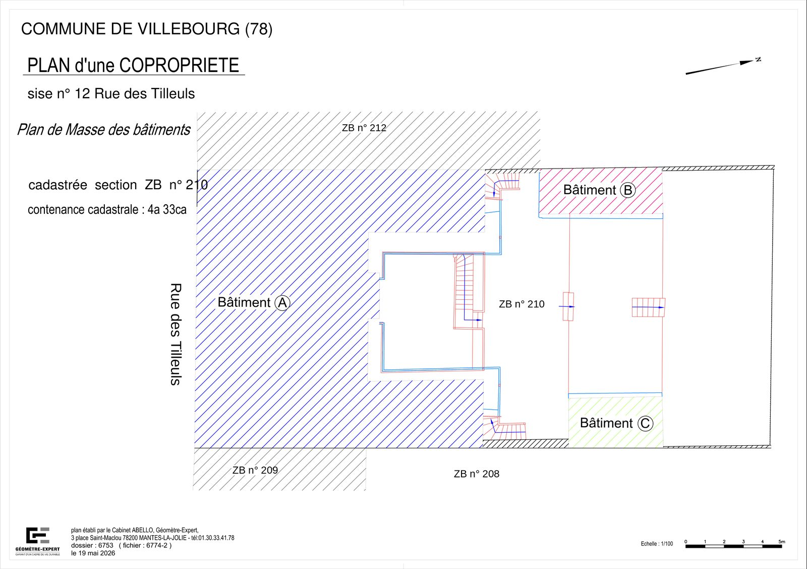
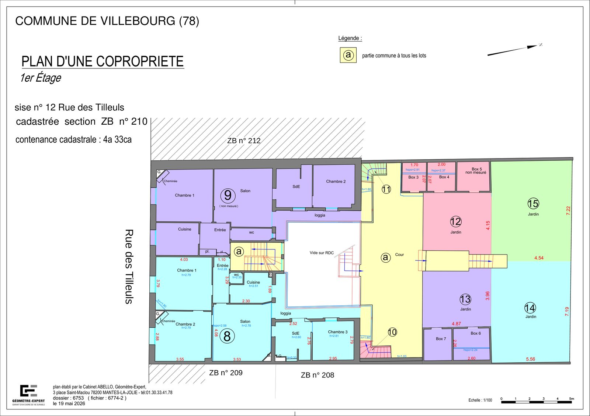
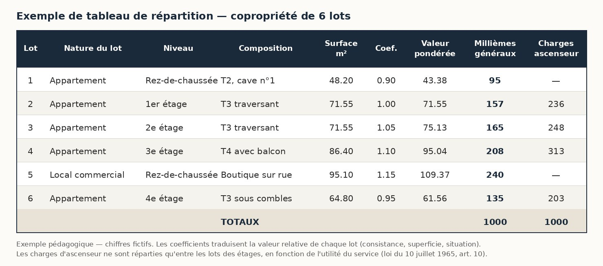

Qu'est-ce qu'un lot de copropriété ?
Ce n'est pas un appartement. C'est un appartement plus une part de tout ce qui est commun — et les deux sont indissociables.
La partie privative est ce dont vous avez la jouissance exclusive : les pièces, les placards, parfois une cave ou un parking, qui forment alors des lots distincts.
La quote-part de parties communes est votre part du sol, des murs porteurs, de la toiture, des couloirs, de la cage d'escalier, des canalisations collectives. Elle s'exprime en tantièmes, le plus souvent en millièmes.
Vendre l'un sans l'autre est impossible : la loi les déclare inséparables.
L'état descriptif de division
C'est la pièce qui donne son identité à chaque lot. Sans elle, un lot ne peut être ni vendu, ni hypothéqué, ni désigné dans un acte.
Elle identifie chaque lot par un numéro, et pour chacun : le bâtiment, l'étage, la nature et la composition de la partie privative, sa situation dans l'immeuble, et la quote-part de parties communes qui lui est attachée.
Elle s'accompagne des plans de chaque niveau, sur lesquels les lots sont repérés, et du tableau de répartition qui donne les tantièmes lot par lot.
L'ensemble est annexé au règlement de copropriété, puis publié au service de la publicité foncière par le notaire. C'est cette publication qui le rend opposable à tous.
Les plans annexés à l'état descriptif
Ce sont eux qui donnent une existence matérielle aux lots. Le texte les désigne, les plans les montrent — et c'est cet ensemble que le notaire annexe à l'acte.


Cliquez sur un plan pour l'agrandir. Plans établis par le cabinet ; commune, adresse et références cadastrales remplacées.
Le tableau de répartition

À quoi ressemble un état descriptif de division
La forme est très codifiée. Chaque lot est désigné par son numéro et sa situation, puis sa quote-part est écrite en toutes lettres avant d'être répétée en chiffres.
Article 6 — Division de l'immeuble. L'immeuble objet du présent état descriptif de division sera divisé en SIX (6) lots privatifs, se répartissant comme suit : cinq logements et un local commercial.
Article 7 — Répartition des droits de quote-part dans la propriété du sol et des parties communes générales.
Lot 1 — Au rez-de-chaussée : un logement de type F2 et une cave, et les QUATRE-VINGT-QUINZE MILLIÈMES : 95 / 1000 de la propriété du sol et des parties communes générales.
Lot 4 — Au troisième étage : un logement de type F4 avec balcon, et les DEUX CENT HUIT MILLIÈMES : 208 / 1000 de la propriété du sol et des parties communes générales.
Lot 5 — Au rez-de-chaussée : un local commercial à usage de boutique sur rue, et les DEUX CENT QUARANTE MILLIÈMES : 240 / 1000 de la propriété du sol et des parties communes générales.
Extrait reconstitué à titre d'exemple, sur la copropriété fictive de six lots du tableau ci-dessus : les tantièmes correspondent.Les quotes-parts écrites en toutes lettres ne sont pas une coquetterie de rédacteur. Elles doublent le chiffre, de sorte qu'une erreur de frappe sur un tantième ne puisse pas passer inaperçue : si les lettres et les chiffres divergent, l'acte est arrêté avant sa publication.
Le même document se poursuit par la composition détaillée de chaque bâtiment, la désignation des parties communes, et les règles d'indivisibilité, de division et de réunion des lots.
Comment se calculent les tantièmes
Ce n'est pas une règle de trois sur les surfaces. La loi impose de tenir compte de la valeur relative de chaque partie privative.
Trois critères entrent dans le calcul : la consistance du lot, sa superficie, et sa situation dans l'immeuble — appréciés au moment où la copropriété est établie, sans considération de l'usage qui en est fait.
Concrètement, deux lots de même surface n'ont pas les mêmes tantièmes si l'un est un appartement traversant au deuxième étage et l'autre une cave. On applique des coefficients de pondération qui traduisent cette différence de valeur.
Un tantième mal calculé se paie pendant des décennies : il fausse toutes les charges et tous les votes en assemblée générale.
Charges générales, charges spéciales
Toutes les charges ne se répartissent pas de la même façon, et c'est une source constante de litiges en assemblée.
Les charges générales — conservation, entretien et administration des parties communes — se répartissent proportionnellement aux tantièmes de chaque lot.
Les charges spéciales — ascenseur, chauffage collectif, et plus généralement les services collectifs et éléments d'équipement commun — se répartissent en fonction de l'utilité que ces services présentent objectivement pour chaque lot.
C'est pourquoi un rez-de-chaussée ne paie pas l'ascenseur dans les mêmes proportions qu'un dernier étage. Le règlement doit fixer ces quotes-parts par catégorie de charges, et indiquer les règles de calcul retenues.
Copropriété ou division au sol ?
C'est le premier arbitrage, et il ne se décide pas au bureau : il se décide en visitant les lieux.
Tant que deux parties d'un bien peuvent être séparées par un trait au sol, chacune avec son accès et ses réseaux, la division parcellaire est préférable : deux propriétés indépendantes, pas de syndic, pas de charges communes, pas d'assemblée générale.
La copropriété s'impose dès que les bâtis s'enchevêtrent. Trois configurations, très concrètes, la rendent inévitable :
- Une pièce imbriquée dans les comblesUn volume habitable qui se prolonge au-dessus de la partie voisine. Le trait au sol ne peut pas le suivre.
- Une pièce en surplombUn étage qui déborde sur l'autre partie. La limite ne serait plus verticale.
- Un sous-sol qui passe dessousUne cave ou un garage qui s'étend sous la partie voisine. Même problème, en dessous.
Dans ces trois cas, la propriété se superpose. Il faut alors passer en copropriété — ou en division en volumes si l'ensemble est complexe.
La page Division de propriétéLe mesurage loi Carrez
Toute vente d'un lot de copropriété doit mentionner la superficie privative. Si la superficie réelle est inférieure de plus d'un vingtième — soit 5 % — à celle annoncée dans l'acte, l'acquéreur peut demander une diminution du prix, dans l'année de l'acte.
La superficie privative se calcule au sol des locaux clos et couverts, après déduction des murs, cloisons, marches et cages d'escalier, gaines et embrasures. Les surfaces dont la hauteur sous plafond est inférieure à 1,80 m ne sont pas comptées.
Sont exclus les caves, garages, emplacements de stationnement, et les lots ou fractions de lots d'une superficie inférieure à 8 m².
Dans l'autre sens, un excédent de mesure ne donne lieu à aucun supplément de prix : l'article 46 de la loi de 1965 ne protège que l'acquéreur.
Le certificat que nous délivrons engage notre responsabilité professionnelle. C'est précisément ce que le notaire et l'acquéreur attendent.
Les questions qu'on nous pose
Faut-il une autorisation pour mettre un immeuble en copropriété ?
Cela dépend de la commune et du bien. Certaines divisions de bâti existant sont soumises à autorisation, et le stationnement est presque toujours le point qui coince. C'est la première chose que nous instruisons, avant même le relevé.
Mon immeuble a plus de dix ans : faut-il un diagnostic avant de le mettre en copropriété ?
Oui, et c'est l'oubli le plus fréquent. Toute mise en copropriété d'un immeuble construit depuis plus de dix ans doit être précédée d'un diagnostic technique global (DTG) : état des parties communes et des équipements, performance énergétique, et chiffrage des travaux à prévoir sur dix ans. Article L.731-4 du Code de la construction et de l'habitation.
Ce n'est pas nous qui l'établissons : il faut vous adresser à un diagnostiqueur habilité. Nous le rappelons sur tous nos devis de copropriété, pour qu'il soit lancé à temps.
Peut-on modifier les tantièmes d'une copropriété existante ?
Oui, mais pas à la légère : modifier les tantièmes touche à la propriété de chacun. Le principe est l'unanimité des copropriétaires, et la modification suppose un nouvel état descriptif publié. Pour la seule répartition des charges, l'article 11 de la loi de 1965 pose la même règle de l'unanimité, avec une exception : lorsque la nouvelle répartition est rendue nécessaire par des travaux ou des actes votés par l'assemblée générale, elle se décide à la même majorité que ces travaux. L'article 12 permet en outre à un copropriétaire de demander en justice la révision de la répartition des charges, dans les cinq ans de la publication du règlement, lorsque sa part s'écarte de plus d'un quart de ce qu'elle devrait être. La modification se justifie généralement par une erreur de calcul d'origine, la création d'un lot nouveau, ou une transformation qui change la valeur relative des lots. Nous établissons alors le nouveau tableau et le comparatif avec l'ancien.
Deux lots peuvent-ils être réunis ?
Oui. La réunion de lots contigus appartenant au même propriétaire est courante. Elle suppose un modificatif à l'état descriptif de division, avec un nouveau numéro de lot et l'addition des tantièmes. Là encore, l'acte est publié.
Les tantièmes correspondent-ils aux mètres carrés ?
Non, et c'est une confusion fréquente. Les tantièmes traduisent une valeur relative, qui tient compte de la superficie mais aussi de la consistance et de la situation du lot. Un studio en rez-de-jardin et un studio de même surface au dernier étage n'auront pas les mêmes tantièmes.
Que se passe-t-il si le total des tantièmes ne tombe pas juste ?
L'acte ne peut pas être publié en l'état. C'est pourquoi nos tableaux font l'objet d'une double vérification arithmétique avant transmission au notaire : chaque colonne, chaque total, chaque clé de répartition.
Une mise en copropriété à préparer ?
Le cabinet intervient à Mantes-la-Jolie, à Limay et dans toute la vallée de la Seine. Décrivez-nous le bien : nous vous dirons s'il relève de la copropriété, de la division au sol ou de la division en volumes, et ce que suppose chacune de ces voies.
Sources : loi n° 65-557 du 10 juillet 1965 fixant le statut de la copropriété des immeubles bâtis, articles 1er, 5 et 10 ; décret n° 67-223 du 17 mars 1967 pris pour son application ; loi n° 96-1107 du 18 décembre 1996 dite loi Carrez ; article L.731-4 du Code de la construction et de l'habitation (diagnostic technique global) ; Service-Public.fr, fiche F2589 « Règlement de copropriété ». Ces éléments sont donnés à titre d'information générale et ne remplacent pas l'examen de votre dossier.